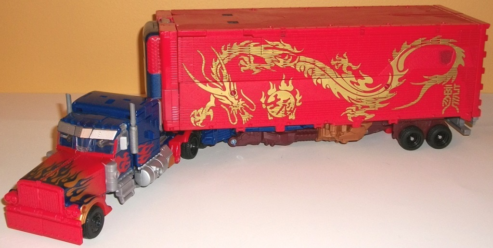
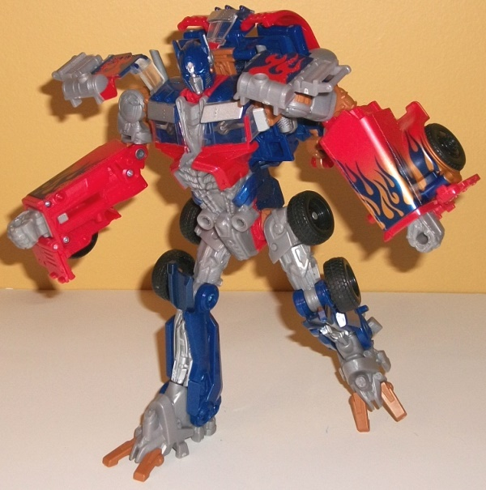
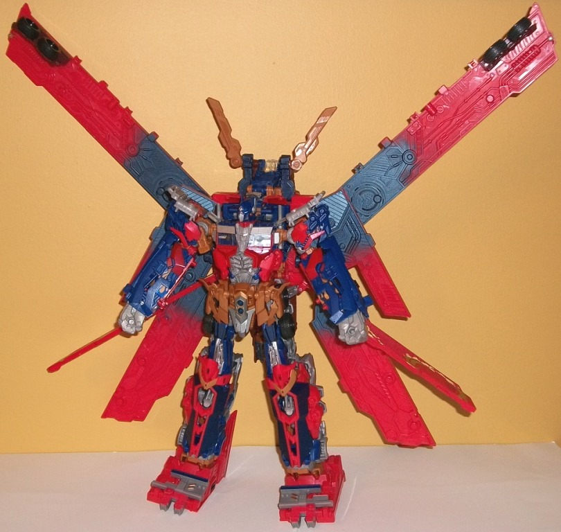
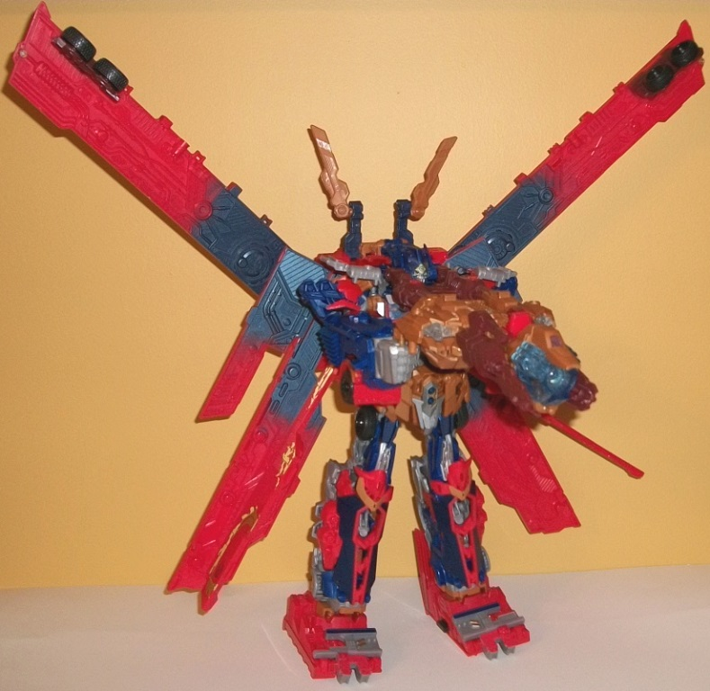

Allegiance
: Autobot
Size
: Ultimate
Price
: $100 (U.S.)
Difficulty of Transformation from Vehicle
to Robot
: Medium
Difficulty of Transformation from Robot
to Super Robot
: Hard
Color Scheme
: Light milky gray,
dark blue, light red, light brown, dark brownish maroon, metallic gold,
and some dark metallic blue, transparent blue, black, clear plastic, silver,
light electric blue, light brownish tan, pale light yellow, and metallic
copper
Rating
: 7.7


(NOTE: Because this is a repaint, this
is not a full-blown review. This mainly covers any changes made to the
mold and the color scheme, and merely compares it to the original DotM
Ultimate Optimus Prime toy. For a review on the mold itself, read the review
of the original DotM Ultimate Optimus Prime toy
here
.)
For this special "Year
of the Dragon" release, the "core" robot of Optimus Prime has barely changed
at all; in fact, the only change at all is that the front grill of the
truck is now light red instead of light milky gray. In this instance I
prefer the milky gray, myself, given that the light red front has no paint
and without some silver or something on it, having the front be all red
just looks weird. That's all small potatoes, though, compared to the trailer,
which has gotten the REAL color overhaul, here. Most obviously, the trailer
is almost entirely red in trailer mode now, with a rather decorative Chinese
gold dragon symbol painted on each side. It looks mighty cool, and making
the Autobot symbols on the side a duller maroon color works nicely with
all the new red on the figure. In the combined "Super Robot" mode, Optimus
obviously gains all that light red onto his trailer wings, though the dark
blue plastic-- and many other colors and paint apps, like the black and
dark blue/light red paint apps-- still remain in the same places on the
super robot parts when compared to the mass release of Ultimate Optimus
Prime. The main color differences here are two-fold: First, a lot of the
light milky gray parts have been replaced with a rather nice-looking shade
of dark brownish maroon, which really goes with the red (and particularly
the blue) quite well, and considerably better than the light gray did.
The darker gray plastic has largely been replaced with a light brownish
tan that's a bit more metallic-looking than that found on some of the smaller
connector pieces on the "core" Optimus Prime toy, and thus looks a bit
better. Like the maroon, I prefer it over the gray plastic it's replacing
quite a bit, and it helps make the overall scheme look a bit more "fiery"
and ashen-- which, of course, fits the theme of this redeco.
No mold changes have
been made to Year of the Dragon Optimus Prime; he also has the same electronic
sound effects and lights as the original Ultimate Optimus Prime toy, too.


If you already have
the original Ultimate Optimus Prime toy, then unless you're a Prime toy
completist, the "Year of the Dragon" Edition is an easy pass. Given the
noticeable markup and the fact that the "core" robot has so little changed,
it just isn't worth it. However, if you're looking for which version to
get, then if you can find this version at a comparable price to the original
I'd recommend this one more, given the more interesting placement of the
red, maroon, and light brown plastic compared to a bunch of milky gray.
I really do wish that they had applied similar changes to the "core" toy
that they applied to Prime's trailer, though, as that might have made this
repaint a bit more worthy of pickup...
Review by Beastbot